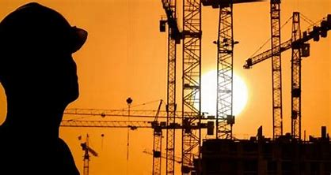
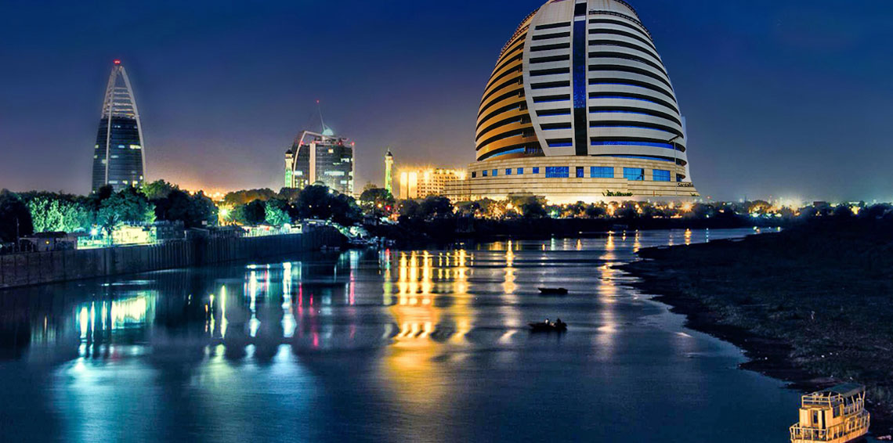

inşaat mühendisliği nedir??🤔
Kamuya hizmet eden inşaat işlerinin projelendirilmesi ve uygulanması mesleğidir

Neden bu bölümü seçtim??🤨
Benim için tüm mühendislik benim için bir arzu ve şansım inşaat mühendisliğindeydi
Avantajlar ve dezavantajlar??✔️✖️
Avantajlar:(İnşaat mühendisliği, şehirleşme, medeniyetlerin yükselişi, mimarın hayal gücünü mümkün kılan, binaları daha güçlü ve her türlü hava koşuluna dayanıklı hale getiren, nüfusun sürekli artması nedeniyle arzu edilen alanlardan biridir)
dezavantajlar:(Dezavantajları zorluğunda yatmaktadır, çünkü mimarlar tarafından sunulan bazı işlerin uygulanması ve bazı durumların üstesinden gelinmesi zordur)
Noktalar VE Dirsler
Matematik ve cebir var. Malzemelerin mekaniği ve malzemelerin kimyası da vardır. Oradaki en zor bilimler arasındalar
Ülkemizde
İnşaat mühendisliği alanı Sudan'da yüksek ve prestijli bir konuma sahipti, ancak son zamanlarda mühendisler ticarileşti ve sadece parayı önemsediler, Emirliklerde çalışan mühendisin Sudan uyruklu olduğunu belirtmekte fayda var

BİTTİ